Branch CND-0001 | evidence rebuilt deterministically from recorded runs | zero provider calls
| Stage | Source | Status | What exists | Main blocker |
|---|---|---|---|---|
| S04 | deterministic replay of accepted canonical DesignState | ACCEPTED | AssemblyStep 3, Body 3, Configuration 2, ConstraintRelation 6, EliminationRecord 1, Envelope 3, FunctionalRegion 4, Interface 4, Joint 3, LoadPath 5, MobilityExpectation 1, PhysicalInteraction 5, ReachResult 4, ReferenceScale 1, RigidGroup 4, State 2, SweptVolume 4, Transition 2, TransitionRequirement 2 | - |
| S05 | DeepSeek + canonical write boundary | REJECTED - NOT DESIGNSTATE | standing: NOTHING | proposed: constraints 5, features 12, kinematic_realizations 6, parameters 6 | IR: feature FEA-0008 has 2 unconsumed steps (B2, B4); exactly one result IS the feature |
| S06 | deterministic settlement (no model) | NOT ENTERED | no system formulated; no value produced | settlement_readiness == False: no current embodiment (no standing feature) stands for CND-0001; there is nothing to settle for |
| S07 | deterministic CAD compilation | NOT ENTERED | no CAD artifact | S06 has not settled a system |
The arrangement, the joint frames and the sampled motion evidence the downstream consumes.
state_hash = 26966a68bdf35f8f24bec19e704972ffaadd9a0962f493d74db19dfa01266486 · provider calls during rebuild: 0
| Joint | Type | Bodies | Origin | Axis | STA-CFG-0001 | STA-CFG-0002 |
|---|---|---|---|---|---|---|
| JNT-0001 | FIXED | BOD-0003 -> BOD-0001 | [-48, 0, 20] | NONE | - | - |
| JNT-0002 | REVOLUTE | BOD-0002 -> BOD-0003 | [-48, 0, 20] | +Y | 0 | -90 |
| JNT-0003 | COMPLIANT | BOD-0002 -> BOD-0002 | [40, 0, 30] | +Y | 5 | 0 |
| Transition | Moving group | Start | End | Sweep evidence |
|---|---|---|---|---|
| TRN-0001 | RGP-0002,RGP-0003,RGP-0004 | STA-CFG-0001 | STA-CFG-0002 | SWV-TRN-0001-RGP-0002 (SAMPLED, 9 samples), SWV-TRN-0001-RGP-0004 (SAMPLED, 9 samples) |
| TRN-0002 | RGP-0002,RGP-0003,RGP-0004 | STA-CFG-0002 | STA-CFG-0001 | SWV-TRN-0002-RGP-0002 (SAMPLED, 9 samples), SWV-TRN-0002-RGP-0004 (SAMPLED, 9 samples) |
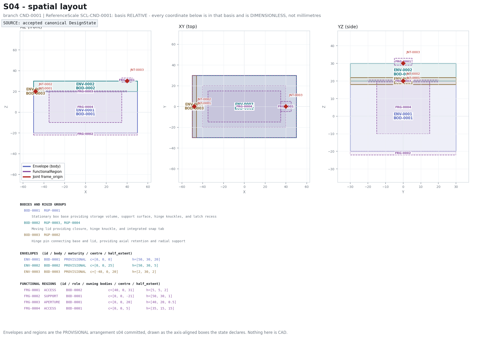
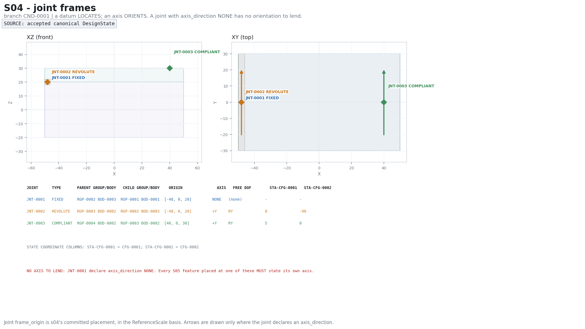
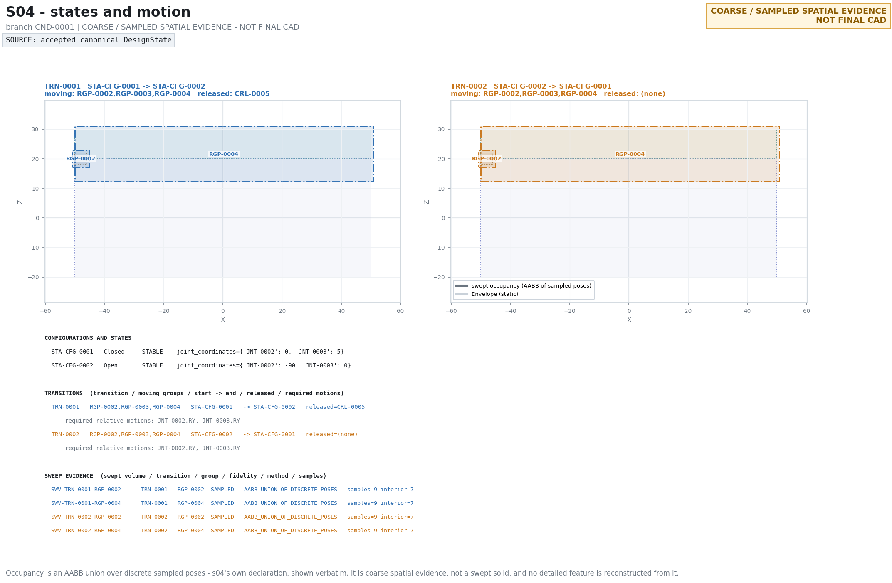
Evidence files: state_summary.json
The geometry that makes each declared relation real, symbolically. S05 declares parameters and never values.
| Step | Result |
|---|---|
| 1. DeepSeek proposed | constraints 5, features 12, kinematic_realizations 6, parameters 6, realizations 0, unresolved 0 |
| 2. Write-boundary result | execution_status = SCHEMA_FAILURE · patch_applied = False |
| 3. Canonical standing S05 entities | NONE — no S05-owned entity stands for this branch |
| 4. Structural findings | 4 |
| 5. Settlement readiness | False |
IR: feature FEA-0008 has 2 unconsumed steps (B2, B4); exactly one result IS the feature
EMBODIMENT: constraint relation CRL-0001 blocks TX, TY, TZ, RX, RY, RZ and no KinematicRealization names it; the restraint is stated and nothing embodies it (its provider is the external reaction site RSR-0001, so only the retained side is owed material here) EMBODIMENT: constraint relation CRL-0004 blocks TX, TY, TZ, RX, RZ and no KinematicRealization names it; the restraint is stated and nothing embodies it EMBODIMENT: constraint relation CRL-0006 blocks TX, TY, TZ, RX, RY, RZ and no KinematicRealization names it; the restraint is stated and nothing embodies it (its provider is the external reaction site RSR-0002, so only the retained side is owed material here) EMBODIMENT: interface IFC-0001 declares INTERFERENCE_FIT and no Constraint governs it
Standing on this branch but authored by other stages (not S05 output): UnresolvedDecision 12.
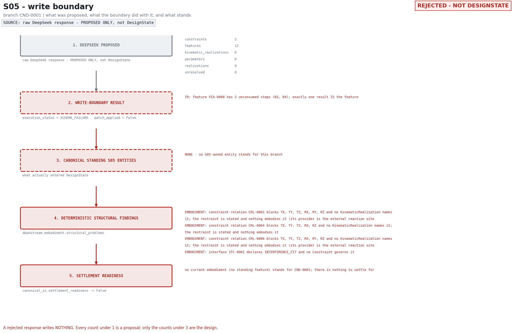
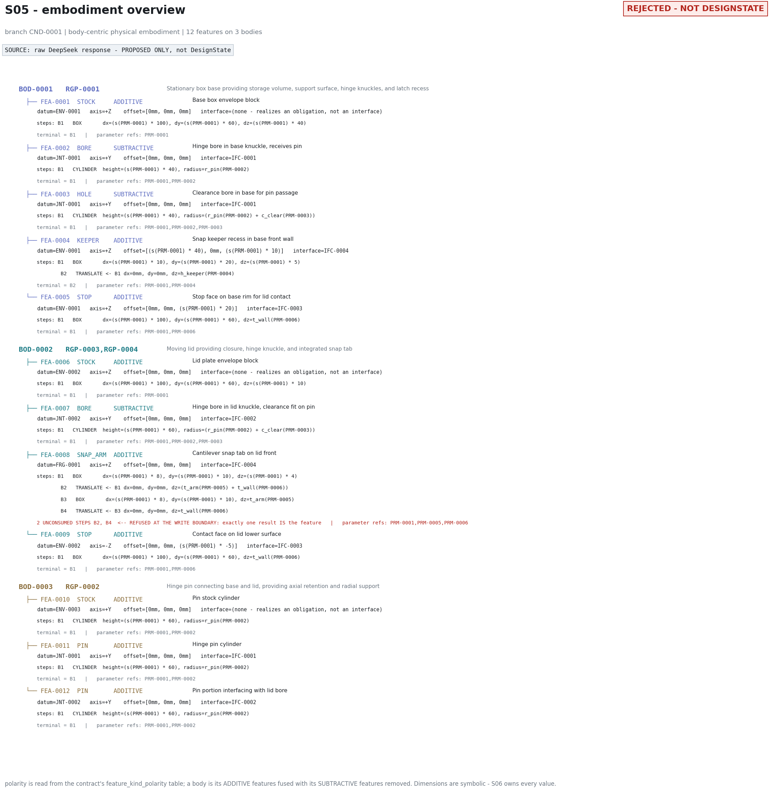
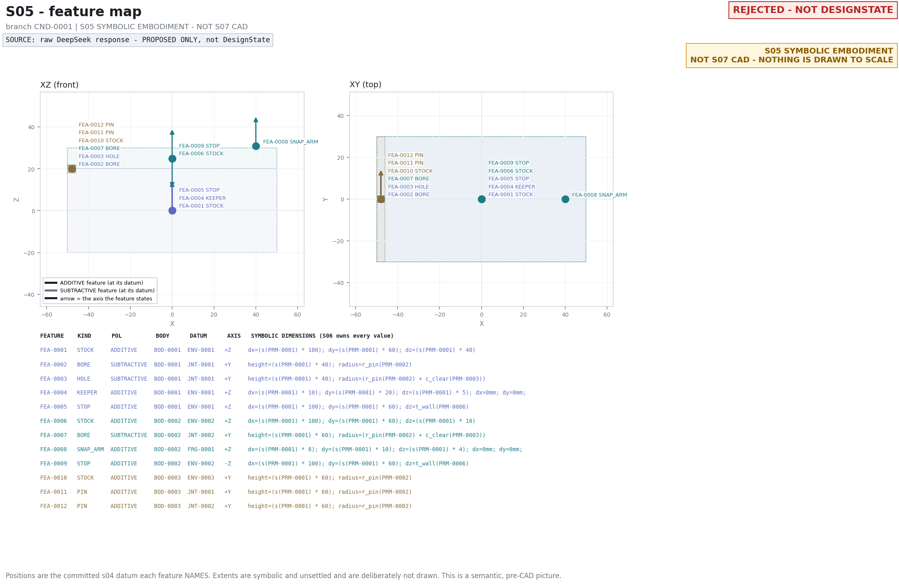
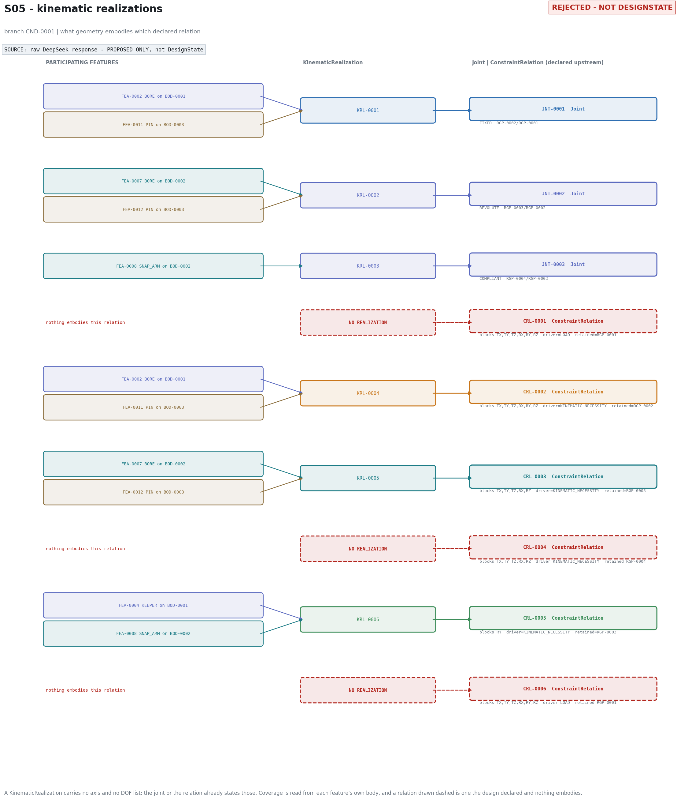
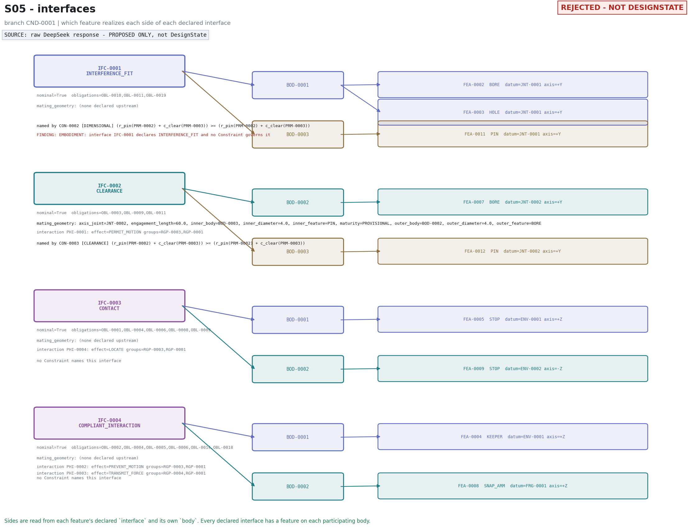
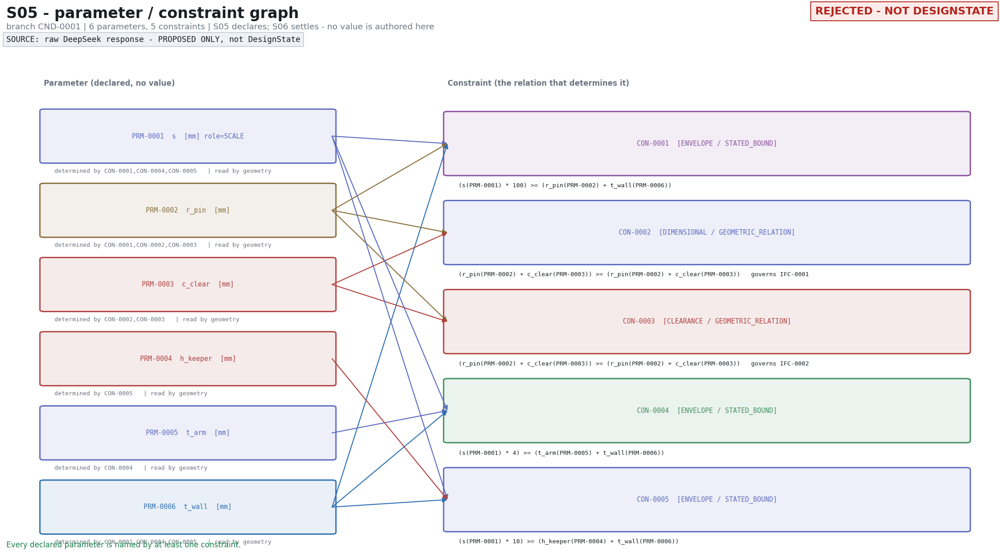
Evidence files: accepted_state_summary.json boundary_verdict.json provider_run_record.json raw_model_response.json prompt.txt raw_model_response.verbatim.txt
Deterministic settlement of the declared system. Not a model result.
settlement_readiness == Falseno current embodiment (no standing feature) stands for CND-0001; there is nothing to settle for
No solver value exists and none is shown. This is not a failed solve: the solver was never run.
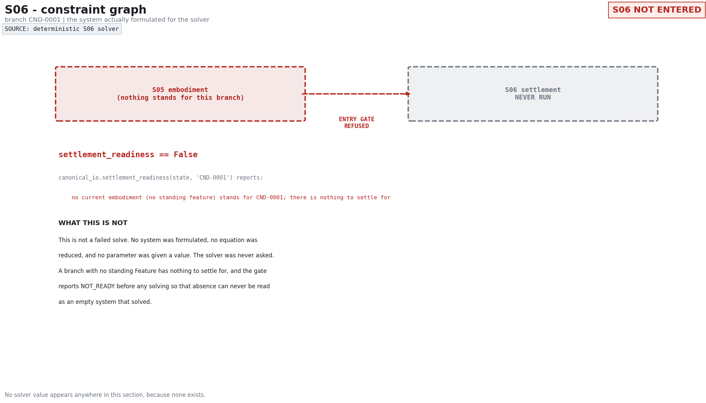
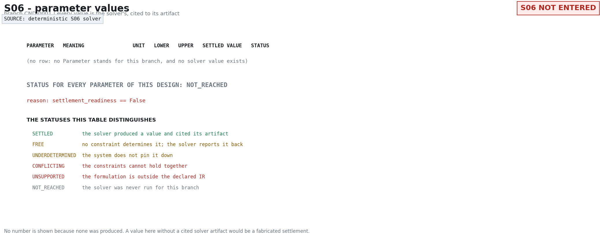
Evidence files: solver_input.json solver_result.json
{kind=link}
{kind=link}
{kind=link}
{kind=link}
{kind=link}
{kind=link}
{kind=link}
{kind=link}
{kind=link}
{kind=link}
{kind=link}